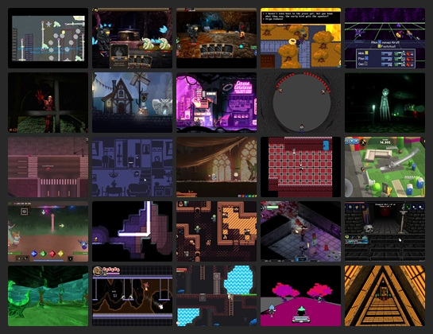

BlueSky Quick Recap #indiedev 2025-09-08
Show Only Saved Posts
Saved Post Num:
---
<< Previous
Home
Next >>

Time Range:
08 Sep 2025
Total Number of Post: 591+
Number of Post Displayed: 17
Post Selection Guidelines
<< Previous
Home
Next >>